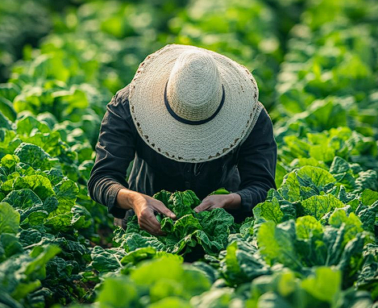

get to know us
Growing with Purpose since 2020
At FourPillars, we believe in cultivating not just crops but community and sustainability. Established in 2020, our farm is a family-owned and operated venture dedicated to producing high-quality agricultural products while maintaining eco-friendly practices.
Our journey began with a simple vision: to create a sustainable farming model that respects the land, supports local communities, and delivers fresh, nutritious produce to families across the region.
Discover more